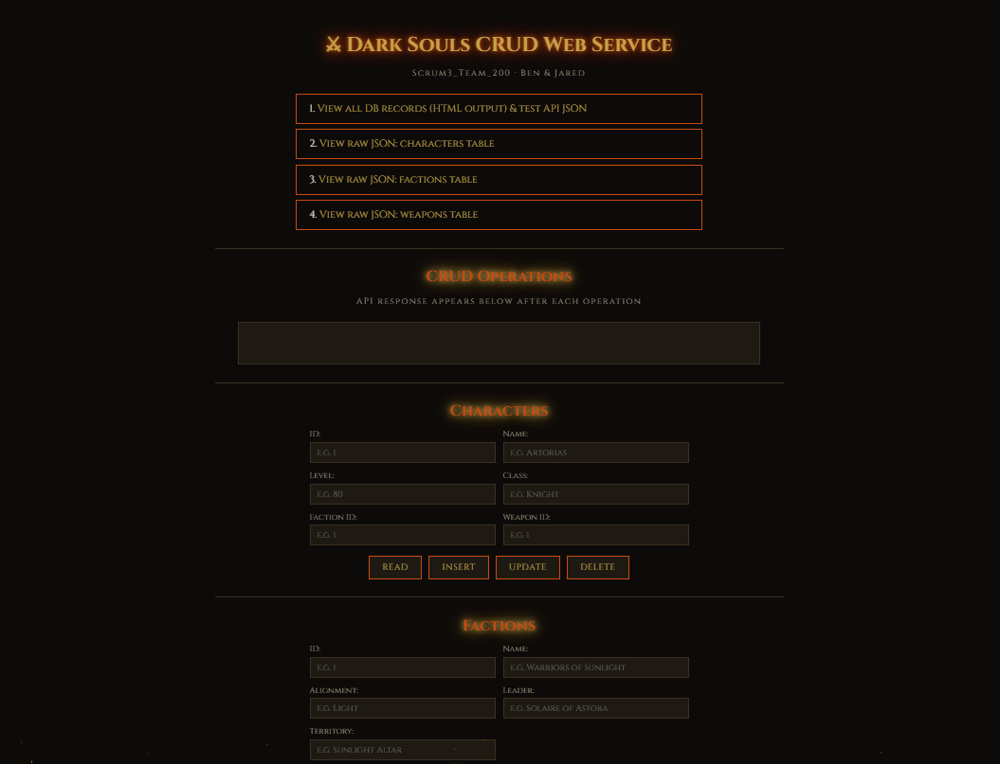
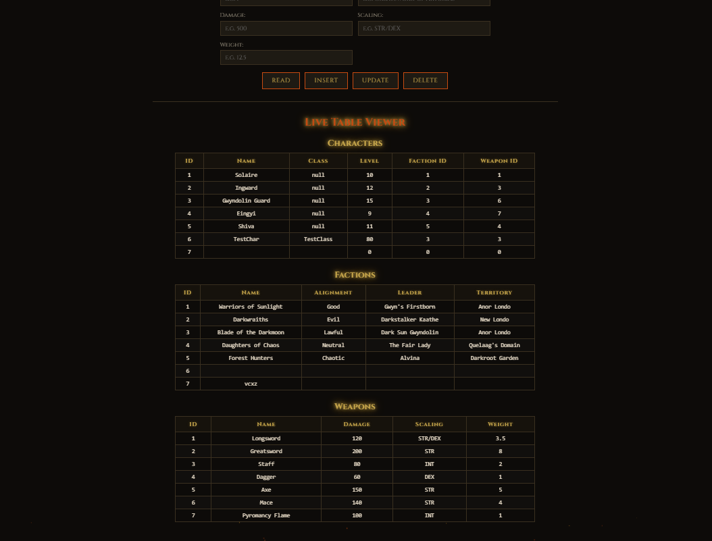
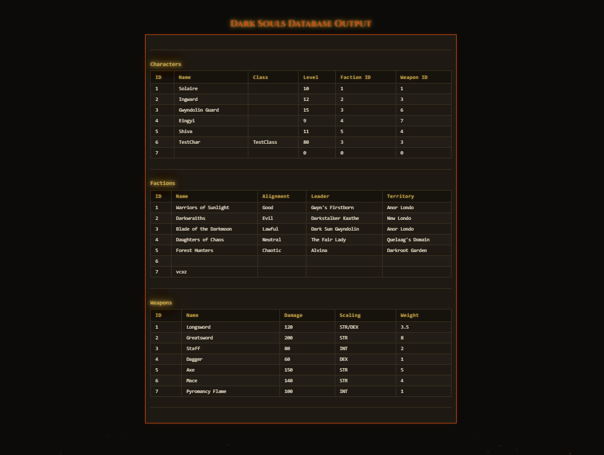

The Dark Souls CRUD Web Service is a PHP/MySQL web service project built for CIS 266. The project demonstrates a themed full CRUD application where the browser client communicates with a PHP API to create, read, update, and delete records from a MySQL database.
The application separates the client and provider portions of the project. The provider side contains the PHP API, database class, object classes, SQL export, and tester page. The client side contains the HTML interface, JavaScript AJAX logic, CSS styling, sound effects, and particle animation used to create a Dark Souls-inspired user experience.
darksoulscharacters, factions, and weapons tables
This sample shows the main PHP API controller for the project. The script receives
an action and table value from the request, calls the matching
database method, and returns a JSON response to the client.
<?php
include_once('classes/Character.php');
include_once('classes/Faction.php');
include_once('classes/Weapon.php');
header('Content-Type: application/json');
include_once('classes/DB_200.php');
$db = new DB_200();
$action = $_REQUEST['action'];
$table = $_REQUEST['table'];
// READ
if ($action == "read") {
$id = !empty($_REQUEST['id']) ? $_REQUEST['id'] : null;
$result = $db->read($table, $id);
$data = [];
while ($row = $result->fetch_assoc()) {
if ($table === "characters") {
$obj = new Character(
$row["id"],
$row["name"],
$row["class"],
$row["level"],
$row["faction_id"],
$row["weapon_id"]
);
} elseif ($table === "factions") {
$obj = new Faction(
$row["id"],
$row["name"],
$row["alignment"],
$row["leader"],
$row["territory"]
);
} elseif ($table === "weapons") {
$obj = new Weapon(
$row["id"],
$row["name"],
$row["damage"],
$row["scaling"],
$row["weight"]
);
}
$data[] = $obj->toArray();
}
echo json_encode($data);
}
// INSERT
if ($action == "insert") {
$data = $_POST;
unset($data['action'], $data['table']);
$db->insert($table, $data);
echo json_encode(["status" => "inserted"]);
}
// UPDATE
if ($action == "update") {
$id = $_POST['id'];
$data = $_POST;
unset($data['action'], $data['table'], $data['id']);
$data = array_filter($data, function($value) {
return $value !== "";
});
$db->update($table, $id, $data);
echo json_encode(["status" => "updated"]);
}
// DELETE
if ($action == "delete") {
$id = $_REQUEST['id'];
$db->delete($table, $id);
echo json_encode(["status" => "deleted"]);
}
?>This file represents the main API pattern used by the application: receive a request from the client, determine the requested CRUD action, call the database layer, and return a JSON response that the JavaScript client can display.


